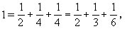
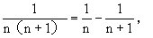
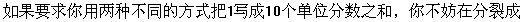
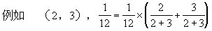
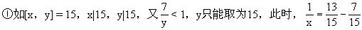

第七讲 从不定方程1/n = 1/x + 1/y的整数解谈起
求不定方程的整数解.这里n是取定的一个自然数.对于方程
显见x=y=12是一个整数解.还有没有别的解？如何求解？有人凭直觉能看出一些解来，但数学要求我们有一个成熟的方法去处理同一类问题。
式更简明，我们不妨把x-6看成一个整体，即令t=x-6，那么x=t＋6.因此
必须是整数，这样我们推知：t是62的因数（约数）。
个未知数x、y的困难问题，转换成找简单的62的因子t的问题了.
一个完全平方数的因子必然是奇数个，如62有因子6、1和36，2和18，3和12，4和9.6称为自补的因子.后面的2和18等都称为互补因子，这样，不妨记为：
t0=6，t1＝1，t1′=36；t2=2，t2′=18；t3=3，t3′=12；t4=4，
这里t和t′是62=36的互补因子（当t＝t′＝6时自补因子也包括在内），所以
成一种了。
以上情况推广到一般情况：求不定方程
的整数解，只要找出n2的全部成组互补因子t和t′，则
就可得到全部解。
例如，求不定方程：
（即n＝12）的整数解，首先分解122＝（22·3）2＝24·32，它的因子根据分解式的结构特点可以排成一个表。
按照互补或自补因子配对有：（1，144），（2，72），（3，48），（4，36），（6，24），（8，18），（16，9），（12，12）。
“单位分数”（分子为1分母为整数）的和，那么我们相当于求：
的整数解，例如求解
在这些基本训练基础上，我们很容易把整数1分拆为若干个单位分数之和。
（1，4），（2，2）.可有

并且可断言只有这三种形式.为证明这一论断，先介绍“推广的抽屉原理”（称之为平均值原理更确切）：一个（正）数，分放于几个抽屉中，必有一个抽屉内存放的数大于或等于平均值.（注意，这里的数不局限于整数）
故推断正确。
在某些问题研究中，并不要求马上找出全部解，只要能将一个单位分数分拆为两个单位分数之和即可，这里我们介绍另一种技巧，先看
（我们这里是在讨论单位分数问题时用到（5）式.其实（5）式又可以改变形式写成：

它在计算中也有巧妙应用，为保持原问题讨论的连续性，它的具体应用请看习题）。
公式（5）在将整数1分裂成若干个单位分数和的求解中，用起来很方便.例如可将1分裂为3个分母不等的单位分数之和。
而且，只要不计较分母太大看起来不直观，我们可以把1分裂成任意多个单位分数之和，如

分解。
上述基本分解还有一种简便一些的算法，它不必分解n2的因子，而只要
）的所有因子由小到大排列：1、2、3、4、6、12，6个因子任取2个配成一个组合，共有15种：
（1，2），(1，3），（1，4），（1，6），（1，12）
（2，3），（2，4），（2，6），（2，12）
（3，4），（3，6），（3，12）
（4，6），（4，12）
（6，12）



种情况即可.
子不是1的，例如

那么请问是否只有两种方式？答：是.理由呢？因为由推广的抽屉原理，
求整数解呢？
约分后分母为15，所以[x，y]为15，2×15，3×15，…，以下分情况讨论。

y=15）的情况应排除。
析，如y大于15，

③y是x与y可能的最小公倍数30，45，60，…中某一个数的约数；
≠单位分数，
∴排除y=9.同样，也可排除y=11，12，13，14.只有y=10一种可能。
从上例看出分数形式不定方程求整数解不是很容易的.一些国际一流的数学家也致力于这类问题的研究.如1950年，厄尔丢斯（Erds）猜想：
学家柯召、孙琦等证明了n＜4×105=400000时，猜想成立.1965年有人把n推进到n<107，1978年又将n推进到了n＜108。
另有谢平斯基（Sierpinski）猜想：
来证明.对于大多数小学生来讲，现在功力有限，只能在最简单的情况下一试身手。
分情况讨论：
对于方程（7），再用推广的抽屉原理，有
又3=x≤y，这样，y=3或y=4，代入（8）后知（8）无解.